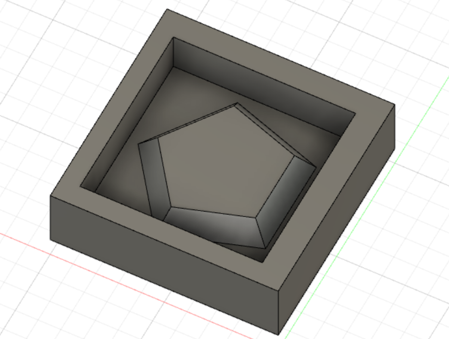

To make a mould design on fusion 360, let us watch this interesting video that shows you how.
For moulding and casting, i referred to Mr Yeo's Webpage Moulding and Casting on how to create the mould.
I used fusion 360 to do a 3d design of a inverted cut out of the Pentagon mould that has a 3-axis finish cut. Here is the finished design.
After designing the mould, on the menu tab, go to manufacture